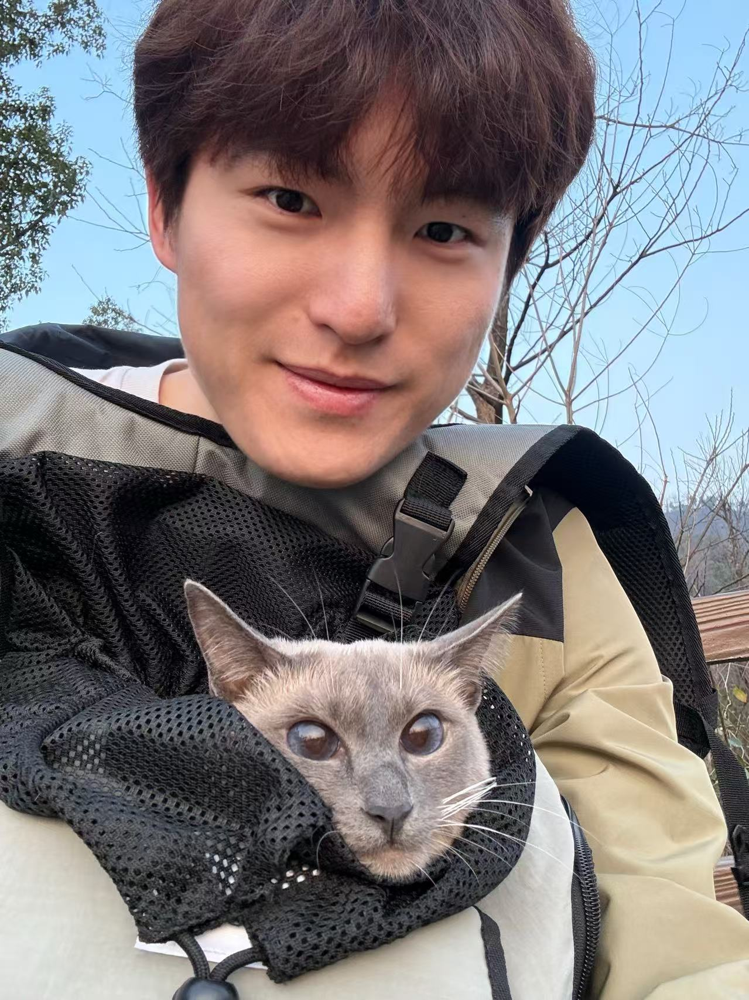

Dr. Uli Klümper
SKLMEH visiting scholar
Group leader
Chair of Limnology
TUD Dresden University of Technology

Associate Professor
School of Energy and Environment
State Key Laboratory of Marine Environmental Health
City University of Hong Kong
PhD in Environmental Microbiology, The University of Hong Kong
SKLMEH visiting scholar
Group leader
Chair of Limnology
TUD Dresden University of Technology

Co-supervision
Visiting, co-supervision
Co-supervision
Co-supervision